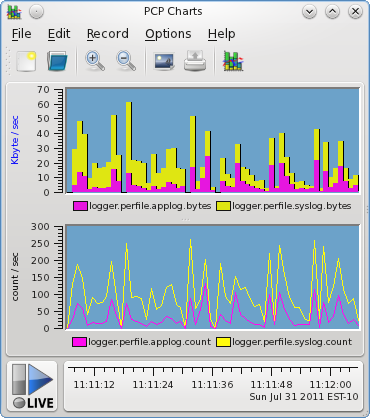

Home · Charts · Time Control
|
|
Home · Charts · Time Control |
pmval pmevent pmchart pmdalogger pmdarsyslog pmdaelasticsearch |
Capturing system event log information from a collection of geographically distributed systems in a reliable and useful way presents many challenges. In order for operations and engineering triage teams to be able to filter important events from this huge amount of information, events need to be shipped to a central location, reliably, where they can be indexed and searched.
Ideally this is done in a way that is both timely and removed from the systems under observation. Being timely allows events relevant to an active production problem are available to triage personnel. Being removed from the production system allows for a reduction of impact to the observed system, and also allows for collation of events from cooperating systems (separate databases, application servers, web servers and storage servers, for example).
In addition to the events logged by the operating system kernel and the system daemons, it is also highly desirable to capture application events as well. For minimal operational maintenance overhead, these should all be managed by a single, reliable event shipping system for application logs. This case study documents the design and deployment of one such system, and focuses on the performance instrumentation used for monitoring and problem diagnosis in the event management service itself.
Technology Choices |
A brief overview of the technologies used, and why they were selected from the many alternatives available, follows. As this was likely to become a critical system infrastructure component, and the organisation had existing operational and engineering expertise in Linux and Java, open source solutions were generally preferred. The opportunity to evaluate new technologies was foreseen and affected some of the choices made.
Event capturing and transport
rsyslog is the default system log daemon on the Linux distribution used, and it provides efficient, reliable end-to-end delivery. It turned out to be easily instrumented - providing both its own metrics and mechanisms for extending with metrics specific to our own needs.
Index and search functionality
elasticsearch and elasticsearch-head are used as the mechanisms for indexing event messages as they arrive, and providing event search functionality.
High-level Design |
The design caters for a fairly typical medium-sized web application deployment. Each data centre hosting the application (distributed throughout the world) contains several racks of equipment dedicated to delivering the service. Individual racks are populated with closely cooperating machines, each generating their own system and application logs.
Initially, all logs are streamed directly to a central machine in the local deployment (typically, within the same rack). On those machines where application logs are being generated the logs are immediately merged into the system log stream using the syslog networking protocol. We made use of the syslog "facility" concept, to designate all application logs to be "local0" facility.
On average, one instance would typically generate several gigabytes of application logs each day. The system log traffic is a tiny fraction of that.
This separation of application log messages from system log messages became most useful at the final end point (indexing), since the facility identifier travels with each message (as does source hostname, timestamp and priority information). Since elasticsearch was chosen as the indexing and search technology, the application was modified (via Log4J configuration) to generate logs messages in JSON format. This allowed the information-rich application logs to maintain a clear separation of critical information (request ID, user ID, identifiers for the pages being accessed, and many more application level details), such that these fields could be separately indexed on the receiving end.
For the remainder of the operating system and service level messages, conversion to JSON was performed at the final stage, just prior to being indexed, with the syslog message being one indexed field. The source host and event generation timestamp that travelled with the message are also separately indexed.
Deployment and Instrumentation: rsyslog |
It was highly desirable to gain insight into many levels of the event transfer process. Identifying hosts generating too much traffic, or hosts not generating any log traffic (misconfiguration) was initially important - so, event counters, and cumulative byte counts of events generated was required. It was also important to be able to see these data rates alongside the network interface data rates, to understand the additional load generated through live streaming of the event log data.
Instrumenting rsyslog internals
The rsyslog daemon runs on each and every machine involved, so low overhead is a desirable attribute in any instrumentation added. Not all of the machines are configured the same though (the event "forwarders" and event "indexers" differ to the "leaf" nodes, which form most of the event sources), and so the configuration of rsyslog required some care.
We took a two-pronged approach to instrumenting the rsyslog processes. On inspection, it turned out that there is some existing instrumentation on the rsyslog internal workings available. It must be explicitly enabled - both at the source level and at runtime. To enable the instrumentation in an rsyslog build, the --enable-impstats build configuration flag is needed. Then, enabling the statistics and exporting them at runtime requires the following additions to the rsyslog configuration:
# Provide rsyslog statistics $ModLoad impstats $PStatsInterval 5
This instructs rsyslog to load the statistics module, and to export the current state of its statistics on a 5 second interval. We can then capture those statistics to an arbitrary output channel, again using a configuration addition.

|
|
The rsyslog configuration addition to achieve the link up between rsyslog and pmdarsyslog is:
# Performance instrumentation syslog.info |/var/log/pcp/rsyslog/stats
Note that once enabling this, care must be taken to ensure those stats values are logged only where we wish. In our case, we did not wish these to end up in the system log file, nor being included in the set of values being shipped for indexing. The configuration entries that achieve this restriction in our scenario are as follows:
*.*;local0.none;syslog.!=info /var/log/messages *.*;syslog.!=info @@log1;RSYSLOG_ForwardFormat $ActionExecOnlyWhenPreviousIsSuspended on & @@log2 & /var/spool/rsyslog-buffer $ActionExecOnlyWhenPreviousIsSuspended off
The syslog.info tag identifies the input channel where the periodic rsyslog metric values are written. So, the first line above prevents the rsyslog metric values (syslog.!=info) from appearing in the local system log file (/var/log/messages). In addition, we prevent all local application log messages from going there ("local0"), which is simply so we don't duplicate work that the application is already doing itself. The remaining configuration lines are those responsible for forwarding local host messages to the central log forwarding server for a rack (log1), and for failing over to a second log server (log2). Note how we choose not to forward the syslog.info message class.
From our findings so far, it is worth keep an eye (pmie) on the queue fullness and discard counts, as they appear to be handy indicators that a node might not be be keeping up. In addition, the interval metric should also be kept under surveilance - if messages arrive more frequently than the configured interval (five seconds in our case), then it indicates a node somewhere is forwarding its instrumentation where it should not be (i.e. a misconfiguration).
Instrumenting rsyslog output channels
We can now extend the high level system log counters by drilling down to specific output channels. We use the ability of rsyslog to write to a named pipe once more - this provides a coordination point between the PCP PMDA and the daemon, without having to log to disk and deal with issues like filesystem free space management, log rotation, and so forth.
We extend our configuration with two more lines, as follows:
# Performance instrumentation syslog.info |/var/log/pcp/rsyslog/stats local0.* |/var/log/pcp/logger/applog *.*;local0.none;syslog.!=info |/var/log/pcp/logger/syslog
The final two lines are feeding all application and other traffic into two named pipes (fifos) for processing. These need to exist before rsyslog starts up, and pmdalogger needs to be configured (at PMDA install time) to be listening for data on these files.
|
 |
Deeper event analysis
Finally, this was an opportunity to begin to evaluate the utility of recently introduced event tracing functionality in PCP. The logger PMDA which was separately counting application and system log traffic also had visibility to all event traffic, and has been used to inspect log contents (for checking event arrival, and for verifying JSON validity, etc) in what proved a much more convenient way than snooping the raw network traffic.
logger.perfile.applog.records logger.perfile.syslog.records
This was done with the command line utility pmevent, which is the first and most simple of event tracing tools - but even in this basic "text dump" form, insight was gained by being able to see the exact traffic passing through each output stream, and some configuration problems were diagnosed and resolved through its use.

A Quick Aside: Buffer Sizes |
|
If there is a chance of sending extremely large messages through rsyslog in your environment, such as JVM stack traces or the like, we found it necessary to increase the default maximum message size permitted: # Global directives $MaxMessageSize 65536 $PreserveFQDN on We also insisted that sending hosts fully qualified domain names are always used, as some of the (global) hosts would otherwise have ambiguous hostnames. Buffer sizes can also become problematic in the named pipe implementation in the Linux kernel. The default (and until relatively recently, unchangeable) buffer size is 16 pages, which on the typical 4KiB page size system, gives us only 64KiB. Since late 2010, this can now be queried and modified though an fcntl(2), and system wide limited are imposed (1MiB maximum, for non-root users). cat /proc/sys/fs/pipe-max-size 1048576 If you're interested in the details of the pipe implementation, refer to fs/pipe.c in the Linux kernel source. |
Deployment and Instrumentation: elasticsearch |
Instrumenting elasticsearch
We come to the final stage of our deployment. System log messages are now flowing to our central repository at an alarming rate, now we need an efficient way to index them immediately as they arrive, and also to allow interactive queries of that indexed data. This turns out to have been made easy by the elasticsearch project, which is a distributed, RESTful, search engine built on top of Lucene.
A basic setup involves downloading the code, untarring, and running bin/elasticsearch -f. That's it, with no more configuration than that we have a working solution which correctly identifies the timestamp fields as distinct from the other text.
From there we can increase reliability and scalability in a number of ways with elasticsearch, but that setup will differ for different deployments and is outside the scope here.
Configuring rsyslog to send messages in the JSON format which the elasticsearch REST API uses, is a matter of configuring the appropriate output module. As was the case with the rsyslog stats module, this must be explicitly enabled - both at the source level and at runtime. To enable this functionality in an rsyslog build, the --enable-elasticsearch build configuration flag is needed.
# # Create a searchable index using elasticsearch # $ModLoad omelasticsearch *.=info;*.=notice;*.=warn;\ auth,authpriv.none;\ cron,daemon.none;\ mail,news,syslog.none :omelasticsearch:
The default template does a good job of transforming the arriving rsyslog messages (including timestamps, facility, priority, sending hostname, etc) into JSON. In our case, the application code sending messages on the "local0" facility has already prepared messages in a rich JSON format already, so we just use a basic rsyslog template that effectively passes any "local0" messages straight through to the keeper.
|
elasticsearch.nodes.indices.size elasticsearch.nodes.cache.field_size elasticsearch.nodes.cache.field_evictions elasticsearch.nodes.cache.filter_size elasticsearch.nodes.cache.filter_evictions elasticsearch.nodes.cache.filter_count elasticsearch.nodes.merges.total_time elasticsearch.nodes.merges.current elasticsearch.nodes.merges.total elasticsearch.nodes.jvm.vm_version elasticsearch.nodes.jvm.version elasticsearch.nodes.jvm.vm_name elasticsearch.nodes.jvm.pid elasticsearch.nodes.jvm.uptime_s elasticsearch.nodes.jvm.uptime elasticsearch.nodes.jvm.gc.count elasticsearch.nodes.jvm.gc.time elasticsearch.nodes.jvm.gc.collectors.Copy.time elasticsearch.nodes.jvm.gc.collectors.Copy.count elasticsearch.nodes.jvm.gc.collectors.ParNew.count elasticsearch.nodes.jvm.gc.collectors.ParNew.time elasticsearch.nodes.jvm.gc.collectors.CMS.count elasticsearch.nodes.jvm.gc.collectors.CMS.time elasticsearch.nodes.jvm.threads.count elasticsearch.nodes.jvm.threads.peak_count elasticsearch.nodes.jvm.mem.heap_max elasticsearch.nodes.jvm.mem.heap_committed elasticsearch.nodes.jvm.mem.non_heap_init elasticsearch.nodes.jvm.mem.heap_init elasticsearch.nodes.jvm.mem.non_heap_committed elasticsearch.nodes.jvm.mem.non_heap_used elasticsearch.nodes.jvm.mem.non_heap_max elasticsearch.nodes.jvm.mem.heap_used elasticsearch.nodes.docs.count elasticsearch.nodes.docs.num_docs |
Search queries
Now that data is being indexed in elasticsearch, we can make interactive queries using elasticsearch-head, which looks a bit like this:
Copyright © 2011 Nathan Scott |